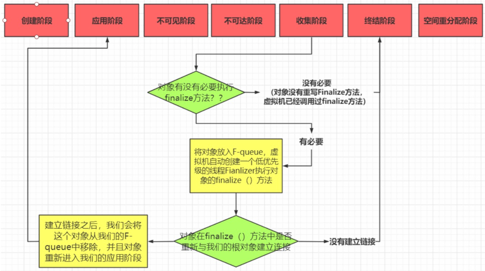

创建
为对象分配存储空间，开始构造对象，从超类到子类对static成员进行初始化，超类成员变量按顺序初始化，递归调用超类的构造方法，子类成员变量按顺序初始化，子类构造方法调用。一旦对象被创建，并被分派给某些变量赋值，这个对象的状态就切换到了应用阶段
应用
对象至少被一个强引用引用着
不可见
程序本身不再持有对象的强引用，虽然引用还存在着（如某些已装载的静态变量或线程或JNI,即GC root），换句话说，程序的执行已经超出了对象的作用域
不可达
对象不再被任何强引用引用着
收集
当垃圾回收器发现该对象已经处于“不可达阶段”并且垃圾回收器已经对该对象的内存空间重新分配做好准备时，则对象进入了“收集阶段”。如果该对象已经重写了 finalize方法，则会去执行该方法的终端操作。但是最好不要去重写finalize方法，原因有二：
会影响JVM的对象分配与回收速度
在分配该对象时，JVM需要在垃圾回收器上注册该对象，以便在回收时能够执行该重载方法;在该方法执行时需要消耗CPU时间且在执行完该方法后才会重新执行回收操作，即至少需要垃圾回收器对该对象执行两次GC。
可能造成该对象的再次“复活”
在finalize方法中，如果有其它的强引用再次持有该对象，则会导致对象的状态由“收集阶段”又重新变为“应用阶段”。这个已经破坏了Java对象的生命周期进程，且“复活”的对象不利于后续的代码管理。
终结
当对象执行完finalize()方法后仍然处于不可达状态时，则该对象进入终结阶段，在该阶段是等待垃圾回收器对该对象进行回收。
空间重分配
垃圾回收器对该对象的所占用的内存空间进行回收或者再分配了，则该对象彻底消失。
